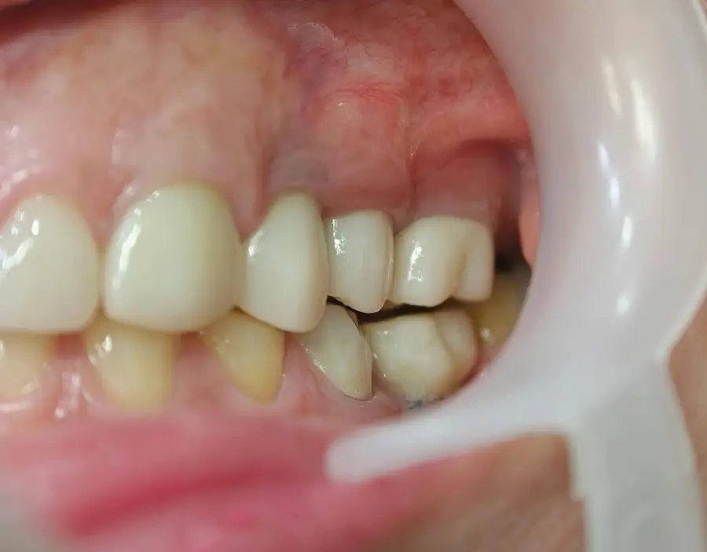

نسخه استخراجشده؛ ترجمه یا تأیید علمی انجام نشده است. وضعیت: captured
بیمار با شکایت از زخم مکرر در لثهی خلف دندان ۶ بالا آمده است. در معاینه، زخم روی لثهی ماگزیلا دقیقاً مقابل دندان ۷ پایین است. بیمار در ناحیهی ۵ و ۶ پایین روکش ایمپلنت دارد.

کاری که در این ویزیت لازم است درمان زخم نیست؛ پیدا کردن دلیلی است که بیمار را وادار میکند لقمه را به سمتی ببرد که مقابلش دندانی نیست.
دندانی که فانکشن ندارد و در اکلوژن مشارکت نمیکند، صرفنظر از سالم بودن تاجش، کاربردی در سیستم جونده ندارد. حفظ وضعیت فعلی این دندان نهتنها کمکی به بیمار نمیکند، بلکه عامل اصلی ترومای بافت نرم است. فضای رستوریتیو بین دو قوس مشترک است، نه ویژگی یک قوس منفرد؛ دندانی که آنتاگونیستش را از دست بدهد، بهتدریج ارتفاعی را اشغال میکند که قرار بود جای پروتز قوس مقابل باشد.
اصلاح از جایی شروع میشود که فانکشن باید به آن برگردد، نه از جایی که علامت دیده میشود.
ارزش بیومکانیکی یک دندان صرفاً به «دستنخورده بودن» آن نیست، به نقشی است که در سیستم جونده دارد. دندان فاقد آنتاگونیست که اکلوژنی ندارد و فضای پروتزی فک مقابل را غصب کرده، باید برای احیای کل سیستم اصلاح شود؛ حتی اگر این اصلاح به قیمت تراش وسیع یا درمان ریشهی یک دندان وایتال تمام شود.